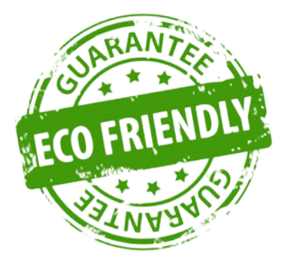
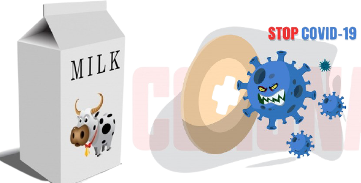
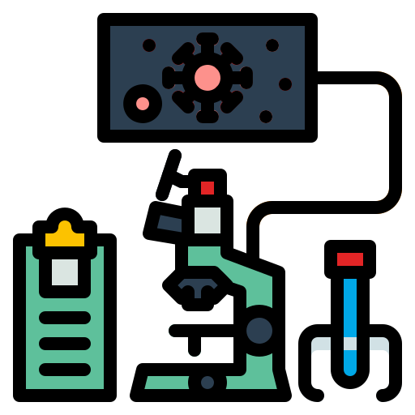

"SPIT ALL OVER SOMEONE WITH A MOUTHFUL OF MILK IF YOU WANT TO FIND OUT SOMETHING ABOUT THEIR PERSONALITY FAST."

"I feel better all day if I start off by eating healthy. Breakfast is simple: multigrain toast with natural peanut butter, oatmeal, yogurt, fruit, or healthy cereal."

"Keep your vitality. A life without health is like a river without water."

"My grandfather used to say that once in your life you need a doctor, a lawyer, a policeman, and a preacher. But every day, three times a day, you need a farmer."
Welcome To DUDH
DUDH(Desi Urban Dairy Hub) was establish in the year 2012.A member owned and operate business with an objective to deliver pure desi milk and also fedral body of 20 Rural dairy co-operative societies spread all over the city of Aligarh having 500 farmer families as their member procuring presently on an average about 5000 litres of milk per day.
A co-operative institution mainly focus on fulfilling the customer.Institution suppliying 5000 litre of milk per day to the urban/semi urban consumer esepacilly hostel's,Colonies,Wedding Ceremony e.t.c
and Booths and full time Distribution Agencies.
Challenges Faced By The Indian Dairy Sector
India has a unique pattern of production, processing and marketing/consumption of milk, incomparable to any large milk producing country.
India is the world’s largest milk producer and consumer of dairy products, consuming almost 100% of its own milk production. The Indian dairy sector is different from other dairy producing countries as emphasis is placed on both cattle and buffalo milk. In order to achieve greater profitability, quality standards need to be improved. Following are some of the practical dairy farming challenges in India.
MEET OUR FARMERS
Farming is a labour of love – a love of land, cows, family and feeding the world. The I’m a Malik Dairy Farmer documentary series profiles the diverse, dimensional who relish in early morning milking and working shoulder to shoulder with family while taking the time to pursue passions in tech, photography, running and even flying!
As jacks of all trades and masters of many, this series showcases the pride Malik dairy farmers have in the work they do and the common values they share with the people who consume their dairy products.

WORKING OUR HEALTH
A glass of milk is often considered as a whole meal, due to the fact that it contains nine essential nutrients. We’re sure your mother and grandmothers narrated lists of the health benefits glass milk possesses while forcing you to empty yours. And we’re here to tell you that the wise women of your life were right. It’s time to consider cutting back on those cups of coffee and maybe replacing them with just plain ole milk.
WHY CHOOSE US? It’ll blow your mind.
Value of customer
Value of customer and value of their money.
Pure fresh milk, free from any acidification or adulternant
 Quality Packaging
Quality Packaging
Healthy way to use packaging and packaging materials.
...Safety Measures
We follow all the safety measure,Because your safety is our priority.
 Healthy Animals
Healthy Animals
Modern cattle feed plant be used for animals.
 farmers
farmers
They provide good quality of fooder to the cows and buffaloes.Because our motive to be a fit and healthy India...
We also check purity
Our institution taking milk from farmer and check or consultant to thier purity. After than supply it.
Our Story See it.
Arwaj ali ushered in ‘White Revolution’ in India with ‘Operation milk dairy’, the largest project for dairy development in the world. As a direct result, India became self sufficient and global leader in milk production and dairy farmers the architects in their own development. This revolution led to an increase in milk production many fold which led to the co-operatives declaring milk holidays around UP. This adversity was circumvented by Mr.Shubham Sagar (our Founder & Chairman) by helping farmers by collecting their milk on such milk holidays. And thus was born malik Milk Foods Ltd. Malik Milk Foods Ltd, founded in 2002, is one of India's elite private sector dairy company, with a diverse portfolio in over 15 consumer centric product categories. We pride ourselves for providing the best global source of expertise and scientific knowledge in support of the development and promotion of quality cow’s milk and milk products, to offer consumers nutrition, health and well-being. We aim to identify, elaborate and disseminate best practices at all our infrastructures, a dairy farms set on global standards, a modern fully automated cheese plant with state of the art technology, a ghee plant with traditional way of making ghee like made at home and an UHT milk processing plant using the best equipment from one of the leading plant equipment manufacture. We manufacture products of truly international quality under internationally famous brand names. Our Its product portfolio includes ghee,fresh milk, skim milk powder, whole milk powder, paneer, an array of processed and natural cheese, cheese spreads, butter, dahi, dairy whitener and all made from 100% fresh cow milk. Pride of Cows is a brand of fresh farm- to -home milk and Topp Up, a flavoured milk in many a variants.
{% endblock body %}